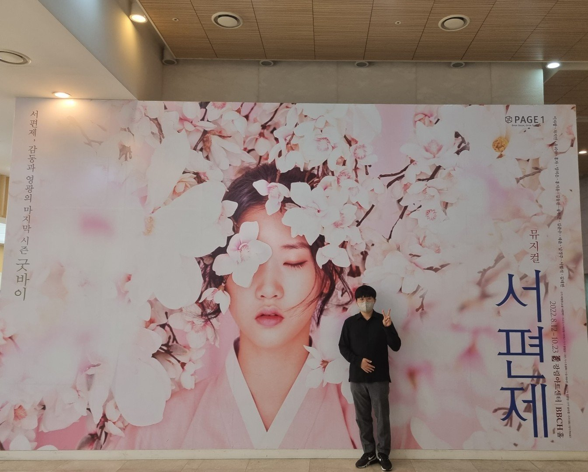

Jaeho Hwang
Postdoctoral Researcher, Human-Centered AI Research Institute
Lecturer, Department of Mathematics
Ewha Womans University · Ph.D. in Mathematics, Sogang University
I am a researcher working at the intersection of artificial intelligence and mathematics, with interests spanning general AI, theoretical AI, and mathematical analysis. On the general side, I develop deep learning methods for a wide range of applications, from vision and language to biomedicine. On the theoretical side, I use mathematical tools to understand how learning systems behave and when they can be trusted. In mathematics, I study the qualitative behavior of nonlinear partial differential equations. Across all of these, my goal is AI that is both effective in practice and grounded in rigorous mathematics.
NEWS
RESEARCH
Machine Learning
Trustworthy & Reliable AI
- Mathematically Grounded AI
- Physics-Driven & Quantum AI
Generative AI & Optimization
- Biomedical Data Science
- Single-Cell Foundation Models
- Error-Correcting Codes & Neural Decoding
Adaptive & Multimodal AI
- Test-Time Adaptation (TTA)
- Test-Time Reinforcement Learning (TTRL)
- Large Language Models (LLMs)
- Vision-Language-Action Models (VLAs)
- Multimodal Large Language Models (MLLMs)
- Agent AI
Partial Differential Equations
- Blow-Up for Parabolic PDEs
- Global Existence for Parabolic PDEs
- Blow-Up for Schrödinger Equations
- Physics-Informed Neural Networks (PINNs)
REPRESENTATIVE WORK
* Corresponding author
All publications →Publications
· * Corresponding author
Talks
Teaching
Department of Mathematics, Ewha Womans University
Differential Equations
Instructor · Ewha Womans University
Calculus
Instructor · Ewha Womans University
Calculus
Instructor · Ewha Womans University
CV
CURRENT POSITIONS
Postdoctoral Researcher
Human-Centered Artificial Intelligence Research Institute, Ewha Womans University
Postdoc Advisor: Uiwon Hwang
Lecturer
Department of Mathematics, Ewha Womans University
RESEARCH EXPERIENCE
Postdoctoral Researcher
Department of Mathematics, Kunsan National University
Postdoc Advisor: Jea-Hyun Park
Postdoctoral Researcher
Institute of Mathematical Sciences, Ewha Womans University
Postdoc Advisor: Jungho Yoon
Postdoctoral Researcher
Inter-university Semiconductor Research Center, Seoul National University
Postdoc Advisor: Hyungcheol Shin
Postdoctoral Researcher
Institute of Basic Science, Sogang University
Postdoc Advisor: Soon-Yeong Chung
EDUCATION
Ph.D. in Mathematics, Sogang University
Advisor: Soon-Yeong Chung
M.S. in Mathematics, Sogang University
Advisor: Soon-Yeong Chung
B.S. in Mathematics, Sogang University
Contact
OFFICE
Room 308, SK Telecom Hall
Ewha Womans University, Seoul
